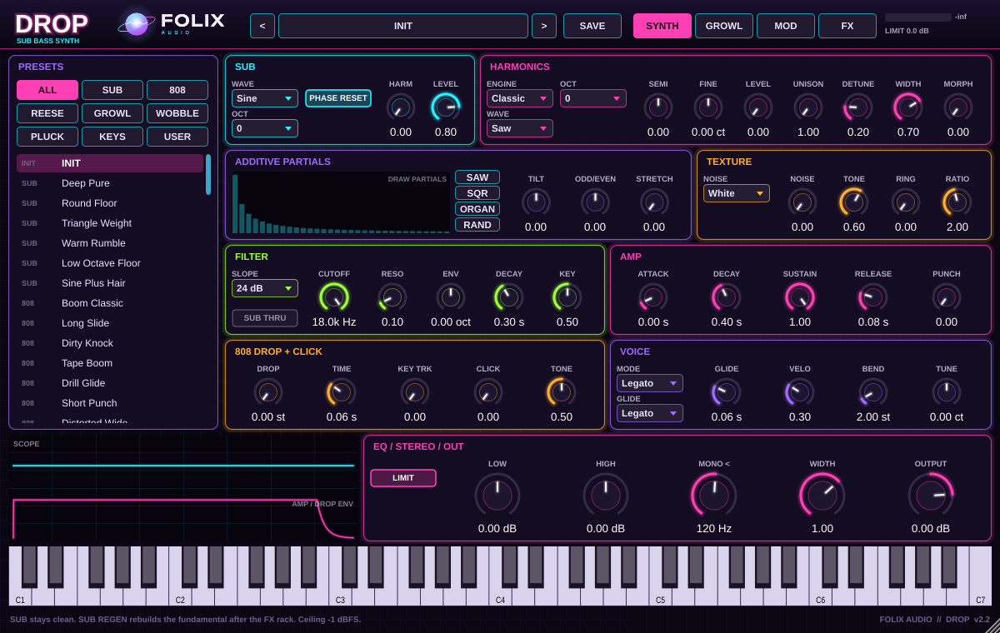

Folix Drop 2
Fat, lush basslines and true sub — a dedicated low-end instrument for the foundation of your track.
$40full version
Windows: VST3. Mac: universal VST3 + AU + standalone. Demo mutes briefly until activated.

Overview
What it does
Drop 2 is a sub-bass instrument built for fat, lush basslines and deep sub. Play it as a bass synth when you need weight that sits under everything and still feels musical in the midrange.
Dial in warm, thick lows for club systems and headphones alike. Use it for rolling 808-style subs, sustained low pads under a drop, or the main bassline that carries the groove.
Features
Key features
- Dedicated sub-bass instrument for fat, lush basslines
- Deep sub that stays clean and controlled on big systems
- Warm low-end tone with musical midrange presence
- Factory presets for rolling subs, sustained lows and main basslines
Listen
Audio demos
Hear Folix Drop 2 in action.
Soft Organ SubFolix Drop 2
Drop 2.2 Demo 2Folix Drop 2.2
Sine Plus HairFolix Drop 2
Tech specs
Specifications
| Version | 2.2 |
|---|---|
| Formats | Windows: VST3; Mac: VST3, AU, standalone |
| Platforms | Windows 10/11 (64-bit); macOS universal |
| System requirements | Windows 10/11 (64-bit) VST3; Mac VST3/AU/Standalone universal |
| Installer | Windows setup or Mac zip; SmartScreen/Gatekeeper may ask you to confirm |
| Presets | Factory presets included |
| Demo | Full features; audio mutes briefly until activated |
Full version
Get the full version
Buy the full version of Folix Drop 2 — no demo mute. Secure checkout on Gumroad.
Buy Folix Drop 2 — $40